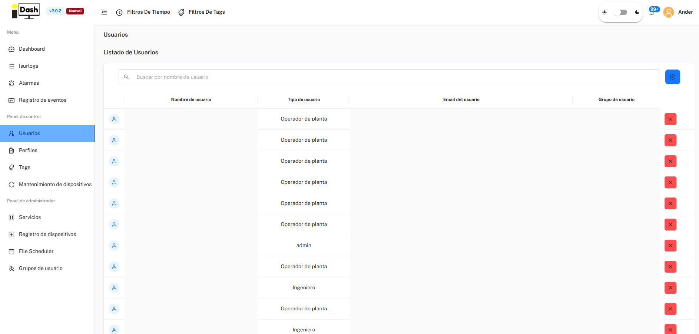
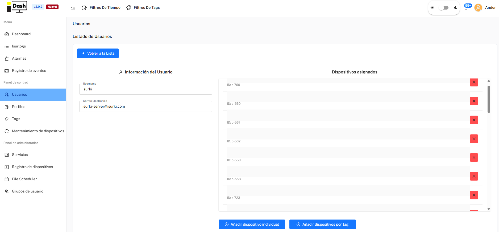

Part of 7. IsurDASH Platform.
7.5. Users
The IsurDASH platform allows for multi-user management, assigning different roles and permissions to control access to data and configuration. Users are organized into "Groups," and each user will only be able to view and manage other members of their same group, thus ensuring privacy between different teams or clients.
7.5.1. User List
The "Users" screen displays a table with all active users belonging to the same group as the logged-in user. The main actions, such as creating, editing, or deleting users, are performed from this interface.
The table provides the following information:
| Column | Description |
|---|---|
| Nombre de usuario | The identifying name of the user. |
| Tipo de usuario | The assigned role (Ingeniero or Operador de planta). |
| Email del usuario | The email address associated with the account. |
| Grupo de usuario | The group to which the user belongs. |

7.5.2. User Roles and Permissions
IsurDASH defines two client-facing roles with different access levels:
1. Operador de planta (View-Only)
A view-only role, ideal for personnel who need to monitor data without being able to make changes that affect device operation. Has access to Dashboard, Isurlogs, Alarmas and Registro de eventos, and can view data and receive alarms for all ISURLOGs in their group — but cannot edit a device's configuration.
2. Ingeniero
Has everything an Operador de planta has, plus the ability to edit the configuration of Isurlogs, and access to the Usuarios, Perfiles, Tags, and Mantenimiento de dispositivos menus — i.e. can create/manage other users, profiles and tags.
Note
There is a third, higher role (admin) with access to the Panel de administrador (Servicios, Registro de dispositivos, File Scheduler, Grupos de usuario) — that's an internal Isurki role, not something a client account can be assigned or create, so it's out of scope for this guide.
7.5.3. Create and Assign a New User
The process for registering a new user on the platform and assigning the corresponding devices is simple and carried out in two stages. Only users with the Ingeniero role can create new accounts.
Stage 1: Create the User Account
- To initiate the process, the user must click the blue button with the add symbol (+), located in the upper right corner of the "Usuarios" screen.
- A form will then need to be filled out with the new user's information:
- Nombre de usuario
- Tipo de usuario (Ingeniero or Operador de planta)
- Email del usuario
- Grupo de usuario
- Upon confirmation, IsurDASH will automatically send an email containing an invitation link to the provided email address. The new user must follow this link to establish their personal password and activate the account before they can log in.
Stage 2: Assign Devices to the New User
By default, a newly created account has no associated ISURLOGs. While the new user could manually add them one by one, an Ingeniero can pre-assign the relevant devices to facilitate and expedite the commissioning process.
To do this, the Ingeniero must click on the newly created user in the user list. An interface will open allowing them to select and assign the ISURLOGs in two ways:
- "Añadir dispositivo individual": Allows selecting and assigning specific ISURLOGs from a list.
- "Añadir dispositivos por tag": Allows assigning all devices that share the same tag simultaneously. Tags are customizable markers used to group and organize the ISURLOG fleet (see 7.7. Tags).
The great advantage of this system is that this assignment can be done immediately after creating the account, without needing to wait for the new user to activate it via the invitation email.
This way, when the new user logs in for the first time, they will already find the corresponding ISURLOG devices in their panel, ready to be monitored.
